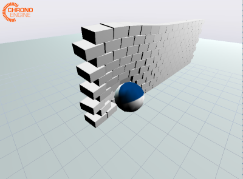

3D Fizik Simulasyonu, Chrono
Daha önce 2 boyut için gördüğümüz simülasyon yazılımının 3 boyutta karşılığı Chrono. Ubuntu üzerinde derlemek için bazı bilgiler [1]. Kurmak için önce
sudo apt-get install libeigen3-dev
Eigen sadece header .h dosyaları, derlenen bir şey yok.
Chrono derlemeden önce kurulması gereken Ubuntu programları,
sudo apt-get install libirrlicht-dev swig freeglut3-dev libgl1-mesa-dev libx11-dev
Simdi Chrono paketinin kendisine gelelim,
Chrono
git clone https://github.com/projectchrono/chrono.git
cd chrono
mkdir build_dir
cd build_dir
cmake -DENABLE_MODULE_IRRLICHT=TRUE \
-DENABLE_MODULE_PYTHON=TRUE \
-DENABLE_MODULE_POSTPROCESS=TRUE \
-DCMAKE_BUILD_TYPE=Debug ..
make
Artık chrono/build_dir/bin altında görülen bir sürü program
işletilebilir. Mesela
./demo_IRR_bricks

Üstteki simülasyon ağır bir topu bir tuğla duvara doğru itiyor. Bu itişi farklı kuvvetler ile yapabiliriz, ve fiziksel sonuçlarını simülasyon içinde gözleyebiliriz.
Eğer kendi kodladığımız, kendi başına ayrı bir projeyi Chrono
kullanacak şekilde derlemek istiyorsak, chrono/template_project
altına gidebiliriz (ya da oradaki kodları herhangi bir yere
kopyalayıp, vs), ve Chrono'nun /opt/chrono da kurulmuş olduğunu
varsayalim,
cmake -DCMAKE_BUILD_TYPE=Debug \
-DChrono_DIR=/opt/chrono/build_dir/cmake \
/opt/chrono/template_project
işletiriz. Bu işlem bir Makefile üretmiş olmalı. onu make ile
derleriz, ve template_project/build/myexe olarak bir işletilebilir
program üretilmiş olmalı.
Motorlar
Chrono'da pek cok fiziksel kavram var, mesela
motorlar,
demo_IRR_motors.cpp kodunda bunu gorebiliriz.
Kaynaklar
[1] projectchrono.org
Yukarı